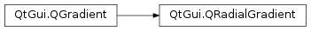

QRadialGradient¶
Synopsis¶
Functions¶
- def
center() - def
centerRadius() - def
focalPoint() - def
focalRadius() - def
radius() - def
setCenter(center) - def
setCenter(x, y) - def
setCenterRadius(radius) - def
setFocalPoint(focalPoint) - def
setFocalPoint(x, y) - def
setFocalRadius(radius) - def
setRadius(radius)
Detailed Description¶
The
PySide2.QtGui.QRadialGradientclass is used in combination withPySide2.QtGui.QBrushto specify a radial gradient brush.Qt supports both simple and extended radial gradients.
Simple radial gradients interpolate colors between a focal point and end points on a circle surrounding it. Extended radial gradients interpolate colors between a focal circle and a center circle. Points outside the cone defined by the two circles will be transparent. For simple radial gradients the focal point is adjusted to lie inside the center circle, whereas the focal point can have any position in an extended radial gradient.
Outside the end points the gradient is either padded, reflected or repeated depending on the currently set
spreadmethod:
PadSpread(default)ReflectSpreadRepeatSpreadThe colors in a gradient is defined using stop points of the
QGradientStoptype, i.e. a position and a color. Use theQGradient.setColorAt()or theQGradient.setStops()function to define the stop points. It is the gradient’s complete set of stop points that describes how the gradient area should be filled. If no stop points have been specified, a gradient of black at 0 to white at 1 is used.In addition to the functions inherited from
PySide2.QtGui.QGradient, thePySide2.QtGui.QRadialGradientclass provides thePySide2.QtGui.QRadialGradient.center(),PySide2.QtGui.QRadialGradient.focalPoint()andPySide2.QtGui.QRadialGradient.radius()functions returning the gradient’s center, focal point and radius respectively.


-
class
PySide2.QtGui.QRadialGradient¶ -
class
PySide2.QtGui.QRadialGradient(center, centerRadius, focalPoint, focalRadius) -
class
PySide2.QtGui.QRadialGradient(center, radius) -
class
PySide2.QtGui.QRadialGradient(center, radius, focalPoint) -
class
PySide2.QtGui.QRadialGradient(QRadialGradient) -
class
PySide2.QtGui.QRadialGradient(cx, cy, centerRadius, fx, fy, focalRadius) -
class
PySide2.QtGui.QRadialGradient(cx, cy, radius) -
class
PySide2.QtGui.QRadialGradient(cx, cy, radius, fx, fy) Parameters: - centerRadius –
PySide2.QtCore.qreal - center –
PySide2.QtCore.QPointF - focalRadius –
PySide2.QtCore.qreal - fx –
PySide2.QtCore.qreal - focalPoint –
PySide2.QtCore.QPointF - cx –
PySide2.QtCore.qreal - radius –
PySide2.QtCore.qreal - fy –
PySide2.QtCore.qreal - QRadialGradient –
PySide2.QtGui.QRadialGradient - cy –
PySide2.QtCore.qreal
Constructs a simple radial gradient with the center and focal point at (0, 0) with a radius of 1.
Constructs an extended radial gradient with the given
center,centerRadius,focalPoint, andfocalRadius.Constructs a simple radial gradient with the given
center,radiusand the focal point in the circle center.Constructs a simple radial gradient with the given
center,radiusandfocalPoint.Note
If the given focal point is outside the circle defined by the
centerpoint andradius, it will be re-adjusted to lie at a point on the circle where it intersects with the line fromcentertofocalPoint.Constructs an extended radial gradient with the given center (
cx,cy), center radius,centerRadius, focal point, (fx,fy), and focal radiusfocalRadius.Constructs a simple radial gradient with the center at (
cx,cy) and the specifiedradius. The focal point lies at the center of the circle.Constructs a simple radial gradient with the given center (
cx,cy),radiusand focal point (fx,fy).Note
If the given focal point is outside the circle defined by the center (
cx,cy) and theradiusit will be re-adjusted to the intersection between the line from the center to the focal point and the circle.- centerRadius –
-
PySide2.QtGui.QRadialGradient.center()¶ Return type: PySide2.QtCore.QPointFReturns the center of this radial gradient in logical coordinates.
-
PySide2.QtGui.QRadialGradient.centerRadius()¶ Return type: PySide2.QtCore.qrealReturns the center radius of this radial gradient in logical coordinates.
-
PySide2.QtGui.QRadialGradient.focalPoint()¶ Return type: PySide2.QtCore.QPointFReturns the focal point of this radial gradient in logical coordinates.
-
PySide2.QtGui.QRadialGradient.focalRadius()¶ Return type: PySide2.QtCore.qrealReturns the focal radius of this radial gradient in logical coordinates.
-
PySide2.QtGui.QRadialGradient.radius()¶ Return type: PySide2.QtCore.qrealReturns the radius of this radial gradient in logical coordinates.
Equivalent to
PySide2.QtGui.QRadialGradient.centerRadius()
-
PySide2.QtGui.QRadialGradient.setCenter(x, y)¶ Parameters: - x –
PySide2.QtCore.qreal - y –
PySide2.QtCore.qreal
This is an overloaded function.
Sets the center of this radial gradient in logical coordinates to (
x,y).- x –
-
PySide2.QtGui.QRadialGradient.setCenter(center) Parameters: center – PySide2.QtCore.QPointFSets the center of this radial gradient in logical coordinates to
center.
-
PySide2.QtGui.QRadialGradient.setCenterRadius(radius)¶ Parameters: radius – PySide2.QtCore.qrealSets the center radius of this radial gradient in logical coordinates to
radius
-
PySide2.QtGui.QRadialGradient.setFocalPoint(focalPoint)¶ Parameters: focalPoint – PySide2.QtCore.QPointFSets the focal point of this radial gradient in logical coordinates to
focalPoint.
-
PySide2.QtGui.QRadialGradient.setFocalPoint(x, y) Parameters: - x –
PySide2.QtCore.qreal - y –
PySide2.QtCore.qreal
This is an overloaded function.
Sets the focal point of this radial gradient in logical coordinates to (
x,y).- x –
-
PySide2.QtGui.QRadialGradient.setFocalRadius(radius)¶ Parameters: radius – PySide2.QtCore.qrealSets the focal radius of this radial gradient in logical coordinates to
radius
-
PySide2.QtGui.QRadialGradient.setRadius(radius)¶ Parameters: radius – PySide2.QtCore.qrealSets the radius of this radial gradient in logical coordinates to
radiusEquivalent to
PySide2.QtGui.QRadialGradient.setCenterRadius()
© 2018 The Qt Company Ltd. Documentation contributions included herein are the copyrights of their respective owners. The documentation provided herein is licensed under the terms of the GNU Free Documentation License version 1.3 as published by the Free Software Foundation. Qt and respective logos are trademarks of The Qt Company Ltd. in Finland and/or other countries worldwide. All other trademarks are property of their respective owners.